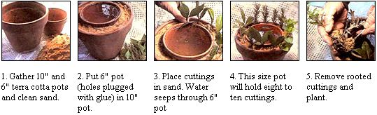

1. Gather 10"" and 6"" terra cotta pots and clean sand. 2. Put 6"" pot (holes plugged with glue) in 10"" pot. 3. Place cuttings in sand. Water seeps through 6"" pot 4. This size pot will hold eight to ten cuttings. 5. Remove rooted cuttings and plant.